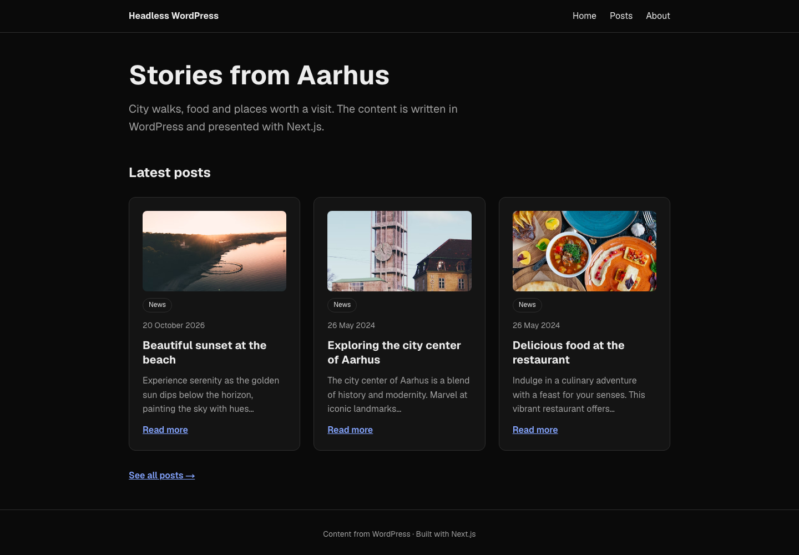
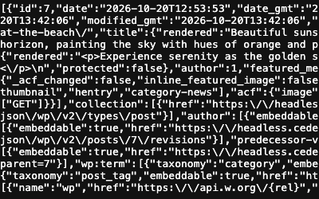

Next.js-appen
Vi bygger den tekniske stack sammen: Next.js, headless WordPress, designsystem og Supabase med auth.
Next.js · WordPress som headless CMS
RACE
I grupper gør I et eksisterende, kedeligt produkt til noget, brugerne husker — med motion, microinteractions og personlighed, men uden at det går ud over brugerens mål.
Vi bygger den tekniske stack sammen: Next.js, headless WordPress, designsystem og Supabase med auth.
Kick-off, roller og beskyttet adgang i Supabase, motion i kode — og faciliteret vejledning frem mod aflevering.
Pitch Day, optimeringer på branches og mundtlig eksamen med produktet live.
Kort inputet nyt begreb eller værktøj
→Implementeringi Next.js-appen
→Overførseltil jeres gruppeprojekt
26/10 · I dagNext.js og headless WordPress
29/10Fra Figma til React/Next.js
30/10Supabase Auth i Next.js
2/11Kick-offgrupper og produkt
3/11Produktkvalificering med underviserne
4/11Student Day
10/11User management, roller og beskyttet adgang
12/11Motion og microinteractions i kode
16/11Faciliteret vejledningmorgen: deployment
17/11Attenderprøve
23/11Faciliteret vejledningmorgen: tjek før aflevering
24/11 kl. 12Aflevering i WISEflow
27/11Pitch Day
1/12 og 3/12Optimering og eksamensforberedelse
9.–11/12Mundtlig eksamen
Faciliteret vejledning: Dagen starter med en kort fælles morgen-session. Resten af dagen arbejder I i grupperne, og vi går rundt og vejleder. Derudover har I undervisning med NKKR og BKI — se Canvas.
Del 1Fra React til Next.js
Del 2Sider og navigation
Del 3Headless WordPress
Del 4Genbrug og fejlhåndtering
layout.js · Link · opgave 2
.env.local · fetch i komponenten · cards ·
loading.js · opgave 4
[slug] · posts[0] og notFound() · vis posten · opgave 5
PostList · About · lib/wordpress.js · formatDate() · opgave
6
_embed · fejlhåndtering · opgave 7
create-next-app · ryd op · push til GitHub
/posts og /about · Header og Footer · not-found.js
.env.local · fetch · PostCard · loading.js
[slug] · posts[0] · notFound()
PostList · About · lib/wordpress.js · formatDate()
_embed · response.ok · error.js

/posts/[slug] med hele indholdet
I dagNext.js og WordPress
29. oktoberFra Figma til React/Next.js
30. oktoberSupabase Auth
10. novemberRoller og beskyttet adgang
12. novemberMotion og microinteractions
— så hvad er problemet med den React-app, I allerede kan bygge?
Skriv stikord ned til begge — vi samler op på dem undervejs.
Videoen er fra 2021. Resten af videoen bruger den ældre Pages Router. Vi bruger App Router — principperne er de samme.
Request →GET
← ResponseHTML · CSS · JS · JSON
localhost
GET og evt. data.200 eller 404 og et indhold.Dagens spørgsmål: Hvor kører React-koden — på clienten eller på serveren?
Request →GET
← Responsetom index.html + JS
Request →fetch(url)
← ResponseJSON
index.html og en JavaScript-bundle.useEffect kalder fetch mod Supabase, og svaret kommer tilbage som JSON.To servere — men ingen af dem kører React. Al React-koden kører i browseren på brugerens enhed.
Request →GET
← Responsefærdig HTML + JS
Request →fetch(url)
← ResponseJSON
Det, der ændrer sig: Browseren får færdig HTML i stedet for en tom side, og API-kaldet
flytter fra browseren til serveren. Derfor starter npm run dev nu en rigtig server.
At rendere er at omsætte komponenter og data til den HTML, brugeren ser. CSR og SSR handler om, hvor det sker.
SSR er ikke nyt. En almindelig HTML-side fra en server er også færdig HTML. Det nye er, at React laver den — på serveren.
<!doctype html>
<html lang="en">
<head>
<title>React Supabase Post App</title>
<script type="module" src="…/assets/index-….js"></script>
</head>
<body>
<div id="root"></div>
</body>
</html><!DOCTYPE html>
<html lang="en">
<head>
<title>Next.js Supabase Post App</title>
<script src="/_next/static/…/chunks/….js" async></script>
</head>
<body>
<header class="site-header">…</header>
<main class="app">
<h1>Explore the latest posts</h1>
<a class="post-card" href="/posts/1">
<h2>Exploring the streets of Aarhus.</h2>Loading..., så søg videre — posts
streames ind længere nede i samme fil.
Prøv selv: Åbn begge apps, vælg Vis sidekilde (⌥⌘U), og søg efter
Exploring the streets med ⌘F. Brug ikke Elements i DevTools — den viser
DOM'en, efter JavaScript har kørt.
<div id="root">.
fetch → render. Hvert trin venter på
det forrige.
Jeres Post App fra Product optimization var fin som CSR.
Offentligt indhold skal vises hurtigt og kunne findes. Derfor giver det mening at rendere på serveren — og det er præcis det, Next.js er bygget til.
Bygger UI'et af komponenter, props og state.
Du bestemmer selv, hvordan resten af appen hænger sammen.Starter en dev-server og bundler din kode til filer, browseren kan køre.
Det, I har brugt indtil nu — sammen med React Router.React + routing, server, datahentning og build i én samlet løsning.
Frameworket bestemmer strukturen. Du udfylder den med dine komponenter.Library eller framework? Forskellen handler ikke om størrelse, men om, hvem der kalder hvem.
Din kodemain.jsx · App.jsx · dine routes
ReactcreateRoot() · useState()
// main.jsx — du starter selv appen
const root = document.getElementById("root");
createRoot(root).render(<App />);
Next.jsfinder filerne i app/
Din kodepage.js · layout.js · loading.js
// app/posts/page.js — Next.js kalder den
export default function PostsPage() { … }PostsPage() selv. Du lægger den det rigtige sted.
Inversion of control: Kontrollen er vendt om. Frameworket styrer flowet og kalder din kode, når der er brug for den — "Don't call us, we'll call you."
app/ bliver til routes
useEffect, useState og loading i hver komponentawait fetch direkte i komponenten
VITE_-værdier ender i browserens JavaScriptKoden på serveren kan bruge værdier, browseren aldrig ser
Next.js erstatter ikke React. Det er React plus de beslutninger, I ellers skulle træffe og sætte sammen selv.
useStateonClick og onSubmitpackage.json og Git
app/ bliver til URL'erasync og bruge awaitexport default async function PostsPage() {
const response = await fetch(url);
const posts = await response.json();
return <h1>{posts.length} posts</h1>;
}"use client"
useState og events som onClicklocalStorage"use client";
import { useState } from "react";
export default function LikeButton() {
const [liked, setLiked] = useState(false);
}
I dag er næsten alt server components. Kun error.js i punkt 8 skal have
"use client" — Next.js kræver det for error boundaries.
Én kommando med flag — så ingen svarer forkert på et spørgsmål undervejs.
npx create-next-app@latest . --js --no-tailwind --eslint --app \
--no-src-dir --import-alias "@/*" --no-react-compiler --cache-components--jsJavaScript i stedet for TypeScript--appApp Router: mapper i app/ bliver til routes
--no-tailwindAlmindelig CSS — Tailwind CSS kommer senere
--eslintLinter, der fanger fejl, mens du skriver--import-alias "@/*"@/components/Header i stedet for ../../components/Header
--cache-componentsNext.js' nye standard for data og caching — vi møder den i punkt 5
Punktummet . betyder: opret projektet i den mappe, du står i. Mappens navn
bliver projektets navn — brug små bogstaver og bindestreger, fx nextjs-wordpress.
app/layout.jsRammen om alle sider: <html>, <body> og metadata
app/page.jsForsiden på /
app/globals.cssGlobal CSS for hele appen
app/page.module.cssCSS Module — klassenavne gælder kun i den komponent, der importerer filen
public/Statiske filer som billeder og ikoner
next.config.mjsKonfiguration — den lader vi stå, som den er
package.jsonScripts: npm run dev, npm run build og npm start
AGENTS.mdVejledning til AI-agenter om den aktuelle version af Next.js
Opret en tom mappe med små bogstaver, og kør kommandoen i VS Code-terminalen.
Kør npm run dev, og find filen til forsiden og den fil, hvor <html> står.
Lad page.js vise en <h1>, slet page.module.css, ret metadata i layout.js, og kopiér globals.css.
Commit, og publicér repositoriet med Source Control i VS Code eller GitHub Desktop.
CSS er ikke dagens fokus: Kopiér den fra referencerepoet via linket. Header og Footer i layout.js kommer først i opgave 2. Fejl om npm naming restrictions? Omdøb mappen til små bogstaver og bindestreger, og kør kommandoen igen.
Du er klar, når: Appen kører lokalt med din egen titel, og udgangspunktet ligger på GitHub.
Og layout.js er det, der går igen på alle sider.
/posts, som viser en bestemt side. I Next.js er det en mappe i
app/ med en page.js.
<Routes>
<Route path="/" element={<HomePage />} />
<Route path="/posts" element={<PostsPage />} />
<Route path="/about" element={<AboutPage />} />
</Routes>app/
├── page.js → /
├── posts/
│ └── page.js → /posts
└── about/
└── page.js → /aboutpage.js er siden.
app/posts/page.js→/postsmappen er URL'en
app/posts/[slug]/page.js→/posts/beautiful-sunset-at-the-beachén side pr. post — i punkt 6
app/not-found.js→/findes-ikkealle URL'er, der ikke matcher en route
components/Header.js✕ingen routeligger uden for app-mappen — bare en komponent
Kun en mappe med page.js bliver en route. Komponenter, der ikke selv er sider,
lægger vi i components/ i roden — ved siden af app/.
app/page.jsforsiden
Footer
app/posts/page.jsalle posts
Footer
app/about/page.jsAbout-siden
Footer
layout.js renderes én gang og bliver stående
{children} er den aktuelle page.js
Med et almindeligt <a> henter browseren hele siden igen — også header og
footer. Med Link skifter kun feltet i midten.
layout.js er rammen om alle siderapp/layout.js · forenklet
import Header from "@/components/Header";
import Footer from "@/components/Footer";
import "./globals.css";
export const metadata = { title: "Stories from Aarhus" };
export default function RootLayout({ children }) {
return (
<html lang="da">
<body>
<Header />
{children}
<Footer />
</body>
</html>
);
}<Header />
{children}her vises app/posts/page.js
<Footer />
metadata bliver til fanens titel. Lad den og fonts fra create-next-app blive
stående.
Link
Link — ikke <a>components/Header.js
import Link from "next/link";
export default function Header() {
return (
<header>
<nav>
<Link href="/">Forside</Link>
<Link href="/posts">Posts</Link>
<Link href="/about">About</Link>
</nav>
</header>
);
}
Kun siden skifterMed Link bliver header og footer stående, og kun
{children} skifter — uden fuld reload.
Hentet på forhåndI produktion henter Link de dele af siden, der ikke afhænger af
data, på forhånd. Så føles klikket hurtigt.
Bliver til et <a>I HTML'en er Link stadig et almindeligt link — med href, fokus og højreklik.
not-found.js
app/not-found.js
import Link from "next/link";
export default function NotFound() {
return (
<main>
<h1>Page not found</h1>
<p>We could not find what you were looking for.</p>
<p>
<Link href="/">Go to the home page</Link>
</p>
</main>
);
}
Ingen mappeFilen ligger direkte i app/ og vises for alle URL'er, der ikke matcher
en route.
Inde i layoutetHeader og footer bliver stående, så brugeren kan navigere videre.
Status 404Next.js sender den rigtige statuskode med — ikke bare en tom side.
Igen i punkt 6notFound() viser samme side, når en post ikke findes.
Lav app/posts/page.js og app/about/page.js med en overskrift hver — og en intro på forsiden.
Lav Header.js og Footer.js i components/ — kopiér dem med CSS fra repoet.
Link i HeaderHeader.jsHeader.module.cssFooter.jsFooter.module.css
Vis Header og Footer rundt om {children} i layout.js.
Tilføj app/not-found.js, test /findes-ikke, og push.
Ingen styling? Kopiér komponenten og dens .module.css. Route virker ikke? Mappen skal hedde som URL'en.
Du er klar, når: Du kan navigere mellem /, /posts og /about uden fuld reload, /findes-ikke viser din not-found-side, og arbejdet er pushet.
WordPress håndterer indholdet. Next.js står for præsentationen.

Request →GET
← Responsefærdig HTML fra temaet
Query →posts, pages
← Rækkerindholdet
Ét system gør det hele: WordPress både gemmer indholdet og bestemmer, hvordan det ser ud. Det er SSR — bare med PHP i stedet for React.
Request →GET
← Responsefærdig HTML + JS
Request →/wp-json/wp/v2/…
← ResponseJSON
Det, der ændrer sig: WordPress bygger ikke længere HTML'en — det gør Next.js. WordPress leverer kun indholdet.
Hoved · præsentationWordPress-temaPHP-skabeloner
Krop · indholdWordPressadmin · database · indhold
Hoved · præsentationNext.jsjeres komponenter
↑ REST API · JSON ↓Krop · indholdWordPressadmin · database · indhold
WebsiteNext.js
Appmobil
Skærmi butikken
Krop · indholdWordPressadmin · database · indhold
Prisen: To systemer at drive. Redaktøren kan ikke selv ændre layoutet — det kræver kode. Og en forhåndsvisning i admin viser temaet, ikke jeres app.
https://dit-domæne.dk/wp-json/wp/v2/posts
Alle udgivne postsDe nyeste først — 10 ad gangen som standard
…/wp-json/wp/v2/posts?slug=beautiful-sunset-at-the-beach
Én bestemt postTil detaljesiden i punkt 6
…/wp-json/wp/v2/pages?slug=about
Din About-pagePages hentes på samme måde som posts
Kladder er ikke med. Kun udgivet indhold er offentligt i REST API'et. Virker din egen
WordPress ikke endnu, så brug test-URL'en
headless.cederdorff.dk.

[
{
"id": 7,
"date": "2026-10-20T12:53:53",
"slug": "beautiful-sunset-at-the-beach",
"title": {
"rendered": "Beautiful sunset at the beach"
},
"content": {
"rendered": "<p class=\"wp-block-paragraph\">…"
},
"excerpt": { … },
"author": 1,
"featured_media": 8,
"categories": [1],
"_links": { … }
}
]Slå Pretty print tilAfkrydsningsfeltet øverst i Chrome. Så bliver JSON'en til at læse.
Det er et arraySvaret starter med [ — også når der kun er ét post.
Du skal ikke bruge det heleFind de seks felter på næste slide.
{
"id": 7,
"date": "2026-10-20T12:53:53",
"slug": "beautiful-sunset-at-the-beach",
"title": {
"rendered": "Beautiful sunset at the beach"
},
"content": {
"rendered": "<p class=\"wp-block-paragraph\">…</p>"
},
"excerpt": {
"rendered": "<p>Experience serenity … hues…</p>"
}
}
idunik nøgle — fx til key i en liste
slugden læsbare del af URL'en til detaljesiden
dateudgivelsesdato, som vi formaterer selv
title.renderedoverskriften — kan indeholde entities som ’
excerpt.rendereduddraget — pakket ind i <p>
content.renderedhele indholdet som HTML
Samme post som på forrige slide — nu som en sti, du kan skrive i koden.
[ ]Array — en liste. Vælg med et index, fx [0], eller løb igennem med
.map().
{ }Objekt — felter med navne. Gå ind med punktum, fx .title.
"…"Værdi — her stopper du. Det er den, du viser.
postsarrayet med alle posts[ ]posts[0]den første post{ }
posts[0].titletitlen er et objekt{ }
posts[0].title.rendered"Beautiful sunset at the beach"tekst
posts.map((post) => <h2 key={post.id}>{post.title.rendered}</h2>)
Typisk fejl: {post.title} giver Objects are not valid as a React child — du
stoppede ved objektet og manglede .rendered.
.rendered betyder HTML
<p>{post.excerpt.rendered}</p><p>Experience serenity as the golden sun dips below the horizon, painting the sky with hues…</p>
<div
dangerouslySetInnerHTML={{
__html: post.excerpt.rendered,
}}
/>Experience serenity as the golden sun dips below the horizon, painting the sky with hues…
Åbn /wp-json/wp/v2/posts med Pretty print. Starter svaret med [?
Find de seks felter i første post, og skriv stien til titlen og uddraget.
Åbn /posts?slug=… — og prøv en slug, der ikke findes.
Åbn /pages?slug=about. Får du et array med din About-page?
Får du en fejl? Tjek, at Permalinks under Indstillinger ikke står til Plain. Brug test-URL'en https://headless.cederdorff.dk, mens du fejlfinder.
Du er klar, når: Du kan forklare, hvad de seks felter skal bruges til, og har noteret din WordPress-URL uden / til sidst.
Uden useEffect og useState.
async, hente data direkte og sende
færdig HTML til browseren.
loading.js.export default function PostsPage() {
const [posts, setPosts] = useState([]);
useEffect(() => {
async function getPosts() {
const response = await fetch(url);
const data = await response.json();
setPosts(data);
}
getPosts();
}, []);
return <h1>{posts.length} posts</h1>;
}export default async function PostsPage() {
const response = await fetch(url);
const posts = await response.json();
return <h1>{posts.length} posts</h1>;
}useState — vækuseEffect — vækasync på komponenten — nytfetch?Request →GET /posts
← ResponseHTML med posts
page.js.env.local og kalder fetch
React kører her
Request →fetch(url)
← ResponseJSON-array
/posts.page.js kører på serveren og læser URL'en fra .env.local.fetch henter posts fra WordPress som et JSON-array.posts.map() bygger HTML'en, som sendes til browseren.
Det er derfor, URL'en kan være hemmelig: Både fetch og
WORDPRESS_URL bliver på serveren. I Vite kørte de i browseren.
.env.local · i roden ved package.json · ignoreres af Git
WORDPRESS_URL=https://dit-domæne.dkpage.js
fetch(`${process.env.WORDPRESS_URL}/wp-json/wp/v2/posts`)
Forskellen fra Vite: VITE_-variabler endte i browseren. Uden
NEXT_PUBLIC_ foran kan variablen kun læses på serveren.
Genstart npm run dev, efter du har oprettet eller ændret .env.local.
.env.example
.env.example · dokumentation · committes
WORDPRESS_URL=https://your-domain.com.gitignore · tilføj én linje under .env*
# env files (can opt-in for committing if needed)
.env*
!.env.example
.env.local bliver hjemmeGit ignorerer alle .env*-filer, så dine
værdier ikke ender på GitHub.
Også .env.exampleDen dukker ikke op i Source Control og kommer ikke med i dit commit.
! er en undtagelse!.env.example tager filen med igen.
Tjek i Source Control eller GitHub Desktop: .env.example skal stå under ændringerne —
.env.local må ikke.
app/posts/page.js
export default async function PostsPage() {
const response = await fetch(
`${process.env.WORDPRESS_URL}/wp-json/wp/v2/posts`
);
const posts = await response.json();
console.log(posts);
return <h1>Posts</h1>;
}
async komponentEn server component må vente på data, før den returnerer JSX.
await fetchSamme fetch som du kender — med URL'en fra .env.local.
console.log i terminalenKoden kører på serveren. Derfor står outputtet i terminalen
— ikke i browserens console.
Tjek først: Står der et array [ … ] med dine posts i terminalen? Så er du klar
til at vise dem.
app/posts/page.js
export default async function PostsPage() {
const response = await fetch(
`${process.env.WORDPRESS_URL}/wp-json/wp/v2/posts`
);
const posts = await response.json();
return (
<main>
<h1>Posts</h1>
<ul>
{posts.map((post) => (
<li key={post.id}>{post.title.rendered}</li>
))}
</ul>
</main>
);
}
posts.map()posts er et array — én <li> pr. post.
key={post.id}Som du kender det fra React: en unik nøgle pr. element.
Samme sti som i punkt 4post.title.rendered — titlen ligger inde i et objekt.
Først titlerneNår listen virker, bygger vi cards ovenpå.
PostCard pr. postapp/posts/page.js · kun return
import PostCard from "@/components/PostCard";
import styles from "./page.module.css";
// … fetch som før
return (
<main>
<h1>Posts</h1>
{posts.length === 0 ? (
<p>There are no posts yet.</p>
) : (
<section className={styles.grid}>
{posts.map((post) => (
<PostCard key={post.id} post={post} />
))}
</section>
)}
</main>
);
<li> bliver til <PostCard />Samme map() — nu med en komponent pr. post.
Props som du kender demHele post-objektet sendes ind som prop.
Tom listeVis en besked, hvis WordPress ikke har nogen posts.
Gridstyles.grid fra app/posts/page.module.css — kopiér CSS'en fra
referencerepoet.
PostCardcomponents/PostCard.js · med PostCard.module.css ved siden af
import Link from "next/link";
import styles from "./PostCard.module.css";
export default function PostCard({ post }) {
const date = new Date(post.date).toLocaleDateString("en-GB", {
day: "numeric",
month: "long",
year: "numeric",
});
return (
<article className={styles.card}>
<time className={styles.date} dateTime={post.date}>{date}</time>
<h2
className={styles.title}
dangerouslySetInnerHTML={{ __html: post.title.rendered }}
/>
<div
className={styles.excerpt}
dangerouslySetInnerHTML={{ __html: post.excerpt.rendered }}
/>
<Link href={`/posts/${post.slug}`} className={styles.link}>
Read more
</Link>
</article>
);
}
Ét post som propDet objekt, du fik fra posts.map().
HTML-felterneTitel og uddrag vises med dangerouslySetInnerHTML.
Link til detaljesidenpost.slug bliver til URL'en — den route bygger vi i punkt 6.
Datoenpost.date er en tekst. toLocaleDateString gør den læsbar — vi
samler det i punkt 7.
Error: Route "/posts": Next.js encountered uncached data during prerendering.
fetch(...) … accessed outside of <Suspense>
Siden venter på WordPress ved hver request. Next.js vil vide, hvad brugeren skal se imens — ellers
fejler også npm run build.
app/posts/loading.js
export default function Loading() {
return <p>Loading posts …</p>;
}page.js er klar
loading.js ved siden af page.jsapp/
loading.jsforsiden · punkt 7
page.js
posts/
loading.jsalle posts · nu
page.js
[slug]/loading.jsén post · punkt 6
about/loading.jsAbout · punkt 7
Går du fra /posts til /about, bliver layoutet stående. Kun siden
under det skifter.
En app/loading.js ligger over det, der skifter —
den dækker ikke navigationen mellem dine sider.
Hver route, der henter data, får sin egen loading.js.
Gem URL'en i .env.local, dokumentér den i .env.example, og genstart npm run dev.
Hent posts i app/posts/page.js, log dem, og vis titlerne i en <ul>.
Lav PostCard med CSS fra repoet, og vis dine posts som et grid af cards.
Brug PostCardIndholdetPostCard.jsPostCard.module.cssposts/page.module.css
Tilføj app/posts/loading.js, kør npm run build, og push.
Fejl om <Suspense>? Den løser du i trin 4. Står der undefined i URL'en? Tjek placeringen af .env.local, og genstart npm run dev. Module not found? Opret den .module.css, du importerer.
Du er klar, når: /posts viser dine posts som cards, npm run build går igennem, og arbejdet er pushet.
[slug] er en pladsholder i URL'en.
[slug], så én page.js kan vise mange
forskellige sider.
beautiful-sunset-at-the-beach.slug/posts/beautiful-sunset-at-the-beachfx ved at klikke på et card
app/posts/[slug]/page.jssamme fil til alle posts
paramset Promise med { slug: "beautiful-sunset-at-the-beach" }
export default async function PostPage({ params }) {
const { slug } = await params;
// …
}
Husk await. params er et Promise i Next.js 16.
app/posts/[slug]/page.js
const response = await fetch(
`${process.env.WORDPRESS_URL}/wp-json/wp/v2/posts?slug=${slug}`
);
// WordPress always returns an array, even for a single match
const posts = await response.json();
const post = posts[0];
if (!post) {
notFound();
}[ {…} ]→
posts[0]Posten findes — vis den.
[ ]→
notFound()Next.js viser din not-found.js.
Samme sti som i punkt 4: Svaret er et array, så posten er posts[0]. Importér
notFound fra next/navigation.
app/posts/[slug]/page.js · return · med
import styles from "./page.module.css"
return (
<main>
<article className={styles.post}>
<Link href="/posts">← All posts</Link>
<time className={styles.date} dateTime={post.date}>{date}</time>
<h1
dangerouslySetInnerHTML={{ __html: post.title.rendered }}
/>
<div
className="wp-content"
dangerouslySetInnerHTML={{ __html: post.content.rendered }}
/>
</article>
</main>
);Link tilbageBrugeren skal kunne komme tilbage til listen.
DatoenSamme formatering som i PostCard — vi samler den i punkt 7.
content.renderedHele indholdet er HTML — afsnit, billeder og overskrifter fra WordPress.
CSSstyles.post og styles.date kommer fra
[slug]/page.module.css. wp-content fra globals.css styler
HTML'en fra WordPress.
dangerouslySetInnerHTML
React escaper normalt al tekst for at beskytte mod XSS — indsprøjtede scripts. Med
dangerouslySetInnerHTML slår du den beskyttelse fra.
Hvem kan skrive det indhold, du indsætter?
Opret app/posts/[slug]/page.js, og læs slug fra params med await.
Hent med ?slug=, brug posts[0], og kald notFound(), hvis den mangler.
Vis titel, dato og content.rendered — med et Link tilbage.
Tilføj [slug]/loading.js, test /posts/findes-ikke, og push.
Er slug undefined? Mappen skal hedde [slug], og params skal await'es. 404, selvom posten findes? Log slug og URL'en.
Du er klar, når: Et klik på et card åbner detaljesiden, /posts/findes-ikke viser din not-found-side, og arbejdet er pushet.
Først gentager vi koden. Så samler vi den.
lib/wordpress.js — hvor al kommunikation med API'et samles i
navngivne funktioner. Siderne beder om data uden at vide, hvordan det hentes.
components/PostList.js · flyttet fra /posts
import PostCard from "@/components/PostCard";
import styles from "./PostList.module.css";
export default function PostList({ posts }) {
if (posts.length === 0) {
return <p>There are no posts yet.</p>;
}
return (
<section className={styles.grid}>
{posts.map((post) => (
<PostCard key={post.id} post={post} />
))}
</section>
);
}app/page.js · forsiden
const response = await fetch(
`${process.env.WORDPRESS_URL}/wp-json/wp/v2/posts` +
"?per_page=3"
);
const posts = await response.json();
return (
<main>
<h1>Stories from Aarhus</h1>
<PostList posts={posts} />
</main>
);
?per_page=3WordPress sender kun de 3 nyeste.
Brug PostList på /posts ogsåSå er griddet ét sted. Flyt
app/posts/page.module.css til components/PostList.module.css.
app/about/page.js
import { notFound } from "next/navigation";
export default async function AboutPage() {
const response = await fetch(
`${process.env.WORDPRESS_URL}/wp-json/wp/v2/pages?slug=about`
);
const pages = await response.json();
const page = pages[0];
if (!page) {
notFound();
}
return (
<main>
<h1 dangerouslySetInnerHTML={{ __html: page.title.rendered }} />
<div
className="wp-content"
dangerouslySetInnerHTML={{ __html: page.content.rendered }}
/>
</main>
);
}
/pages i stedet for /postsSamme felter: title, content og slug.
Fast slugabout står direkte i URL'en — ingen params.
Stadig et arraypages[0] og notFound() som på detaljesiden.
LoadingForsiden og About henter data — giv dem hver sin loading.js.
fetch i hver side
app/page.jsapp/posts/page.js[slug]/page.jsabout/page.js
fetch med samme URL
WordPress
Skal URL'en ændres, eller skal du tilføje_embed, retter du fire steder.
app/page.jsapp/posts/page.js[slug]/page.jsabout/page.js
getPosts() · getPostBySlug(slug) …
lib/wordpress.jsal kommunikation med API'et
fetch
WordPress
Siderne beder om data. Kun ét sted ved, hvordan det hentes.lib/wordpress.js
const response = await fetch(
`${process.env.WORDPRESS_URL}/wp-json/wp/v2/posts`
);
const posts = await response.json();↓ samme kode — nyt sted og et navn
import { getPosts } from "@/lib/wordpress";
const posts = await getPosts();lib/wordpress.js
const API_URL = `${process.env.WORDPRESS_URL}/wp-json/wp/v2`;
export async function getPosts() {
const response = await fetch(`${API_URL}/posts`);
const posts = await response.json();
return posts;
}
export async function getLatestPosts() { … }
export async function getPostBySlug(slug) { … }
export async function getPageBySlug(slug) { … }Gevinsten kommer i punkt 8: Billeder og fejlhåndtering skal kun tilføjes ét sted.
getPostBySlug(slug)
lib/wordpress.js
export async function getPostBySlug(slug) {
const response = await fetch(
`${API_URL}/posts?slug=${slug}`
);
const posts = await response.json();
return posts[0];
}
Returnér posts[0]Svaret er stadig et array. Siden får én post — eller
undefined, hvis arrayet er tomt.
getPageBySlug(slug)Præcis det samme — bare med /pages.
app/posts/[slug]/page.js
import { notFound } from "next/navigation";
import { getPostBySlug } from "@/lib/wordpress";
export default async function PostPage({ params }) {
const { slug } = await params;
const post = await getPostBySlug(slug);
if (!post) {
notFound();
}
// … return som før
}
notFound() bliver i sidenDet er siden, der bestemmer, hvad brugeren ser.
Typisk fejl: Returnerer funktionen hele arrayet, er post.title
undefined — og !post fanger aldrig et tomt array.
lib/format.js
lib/format.js
export function formatDate(date) {
return new Date(date).toLocaleDateString("en-GB", {
day: "numeric",
month: "long",
year: "numeric",
});
}PostCard og på detaljesiden
import { formatDate } from "@/lib/format";
const date = formatDate(post.date);Ens overaltCards og detaljeside viser datoen på samme måde.
Én ændringVil du have dansk dato, skifter du kun "en-GB" til
"da-DK" ét sted.
Vis de 3 seneste posts, og flyt griddet til PostList.
Hent din About-page, og giv forsiden og About hver sin loading.js.
Flyt dine fetch-kald til fire funktioner i lib/wordpress.js.
Flyt datoen til formatDate(), kør npm run build, og push.
Virker alt, men ser ens ud? Godt — datalaget ændrer ikke det, brugeren ser. Fejl om import? Tjek, at funktionerne er export'et, og at importen er @/lib/wordpress.
Du er klar, når: Ingen sider kalder fetch direkte, datoen formateres ét sted, npm run build går igennem, og arbejdet er pushet.
Billeder og kategorier med _embed — og en plan for, når WordPress ikke svarer.
_embederror.js.
?_embed med?
?_embed
{
"id": 7,
"featured_media": 8,
"categories": [1]
}?_embed
"_embedded": {
"wp:featuredmedia": [
{ "source_url": "https://…/sunset.avif", "alt_text": "" }
],
"wp:term": [
[{ "id": 1, "name": "News" }]
]
}post._embeddedobjekt["wp:featuredmedia"]array — kolon kræver [" "]
[0]første billede
.source_urlURL'en til <img>
?.components/PostCard.js
const image = post._embedded?.["wp:featuredmedia"]?.[0];
const categories = post._embedded?.["wp:term"]?.[0] ?? [];
return (
<article className={styles.card}>
{image && (
<img className={styles.image} src={image.source_url} alt={image.alt_text} />
)}
<ul className={styles.categories}>
{categories.map((category) => (
<li key={category.id}>{category.name}</li>
))}
</ul>
{/* … dato, titel, uddrag og link som før */}
</article>
);
Tilføj _embed i lib/wordpress.jsKun den første parameter får ? — resten får &, fx
?per_page=3&_embed.
?.Giver undefined i stedet for en fejl, hvis en post ikke har et billede.
?? []En tom liste, hvis der ingen kategorier er — så virker .map() stadig.
<img> i dagESLint advarer om <img> — det er forventet.
next/image kræver, at dit domæne står i images.remotePatterns.
response.ok
fetch fejler ikke ved HTTP-fejlresponse.okMed response.ok
error.jsdet samme
posts.map is not a function"WordPress responded with 401"
posts[0] er tom → 404, selvom posten findeserror.js med retry
const response = await fetch(`${API_URL}/posts?_embed`);
if (!response.ok) {
throw new Error(`WordPress responded with ${response.status}`);
}
Tjek status i hver funktion i lib/wordpress.js. Status 200–299 giver
response.ok === true. Alt andet kaster en fejl, som error.js kan fange.
loading.jsmens data hentes — én pr. routeerror.jsnår WordPress ikke svarer, eller noget kaster en fejl
not-found.jsnår notFound() kaldes, eller URL'en ikke matcher
PostList"There are no posts yet." — når arrayet er tomt
Tre af dem har du allerede: loading.js, not-found.js og den tomme
liste i PostList. Nu mangler kun fejlen.
app/error.js
app/error.js
"use client";
export default function Error({ retry }) {
return (
<main>
<h1>Something went wrong</h1>
<p>We could not fetch the content from WordPress.</p>
<button onClick={() => retry()}>Try again</button>
</main>
);
}
"use client"Next.js kræver, at error.js er en client component. Knappen med onClick
kræver det også.
retry()Henter og renderer siden igen. Brugeren får en vej videre.
_embedFind _embedded i JSON'en, og tilføj _embed i lib/wordpress.js.
Vis billede og kategorier på cards — og billedet på detaljesiden og About med className="featured-image".
Tjek response.ok, og tilføj app/error.js med retry().
Stav et endpoint forkert, se error.js, ret det igen, og push.
Viser forsiden 10 posts? Brug &_embed — ikke ?_embed — efter ?per_page=3. Cannot read properties of undefined? Brug ?. hele vejen ned ad stien.
Du er klar, når: Dine cards har billede og kategori, en forkert URL giver din fejlside med en knap, der virker, og arbejdet er pushet.
page.js er en side. layout.js er rammen om siderne.async og henter data uden useEffect.[slug] er en pladsholder — én page.js viser mange posts.lib/wordpress.js samler datahentningen. loading, error og
not-found er filer.
page.js→fetch på serveren→loading · error · not-found
Næste gang: Fra Figma til React/Next.js — vi bygger en komponent fra Figma i appen.